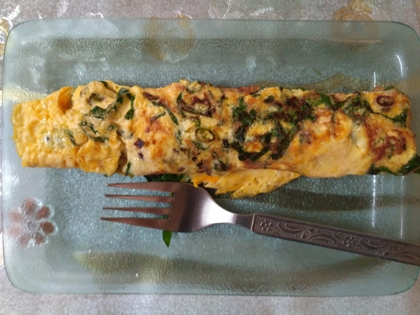

Spinach Omelette

- ⏲️ Prep time: 2 min
- 🍳 Cook time: 5 min
- 🍽️ Servings: 1
Ingredients
- Mustard seeds
- Cumin
- Chilies(there are many to choose from and vary the amount to your liking)
- eggs
- Spinach/baby spinach
- butter, oil, seasoning(salt, pepper)
Directions
- put some oil in a pan, let it get hot and add some cumin and mustard seeds, let them roast for a few seconds
- add chopped Chilies
- add thinly scliced spinach roughly covering the pan.
- add a few knobs of butter and then add your whisked eggs.
- cook till the bottom is crisp and the top has become soft and no longer watery.